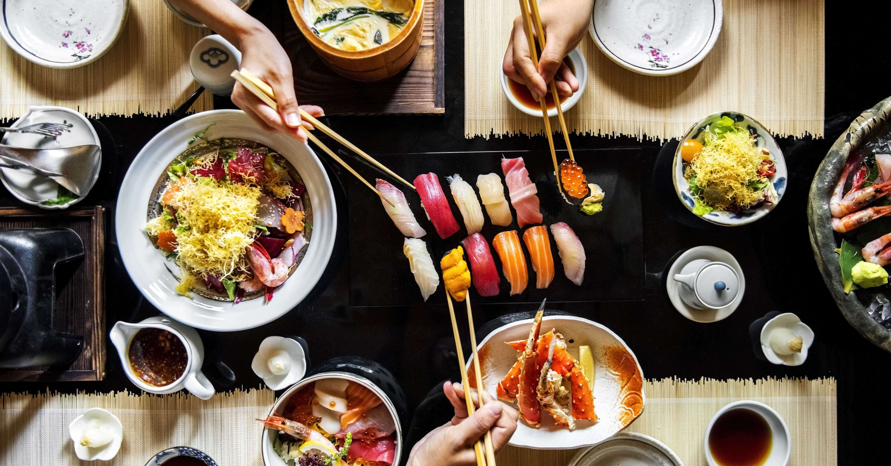
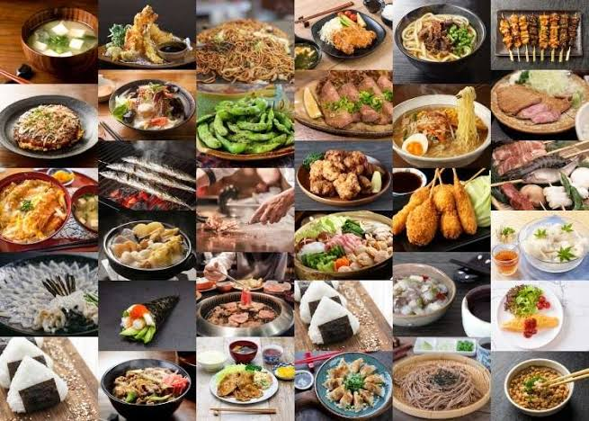
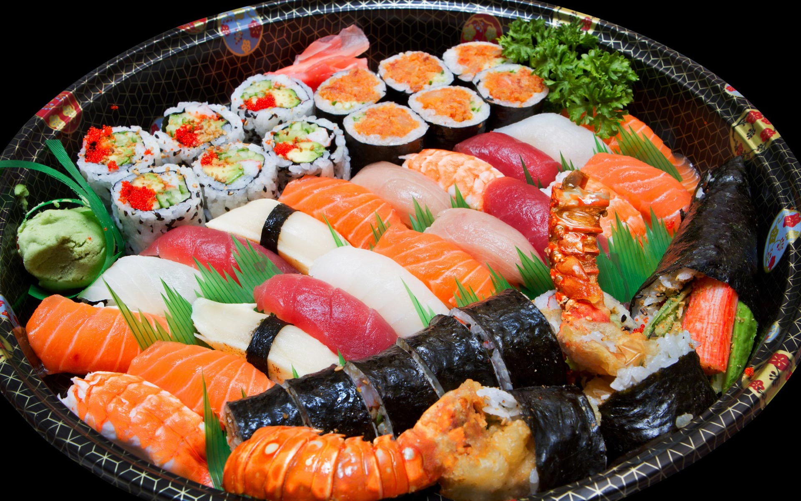
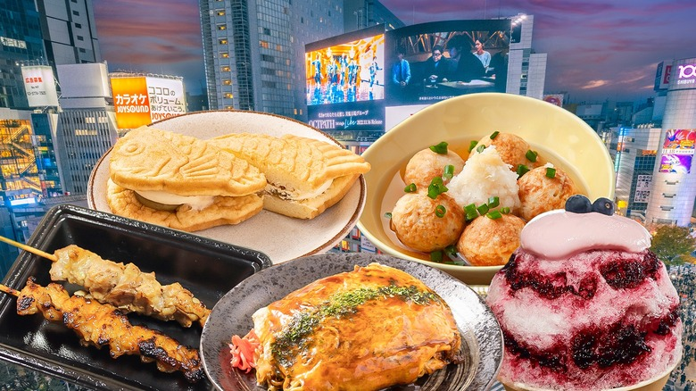
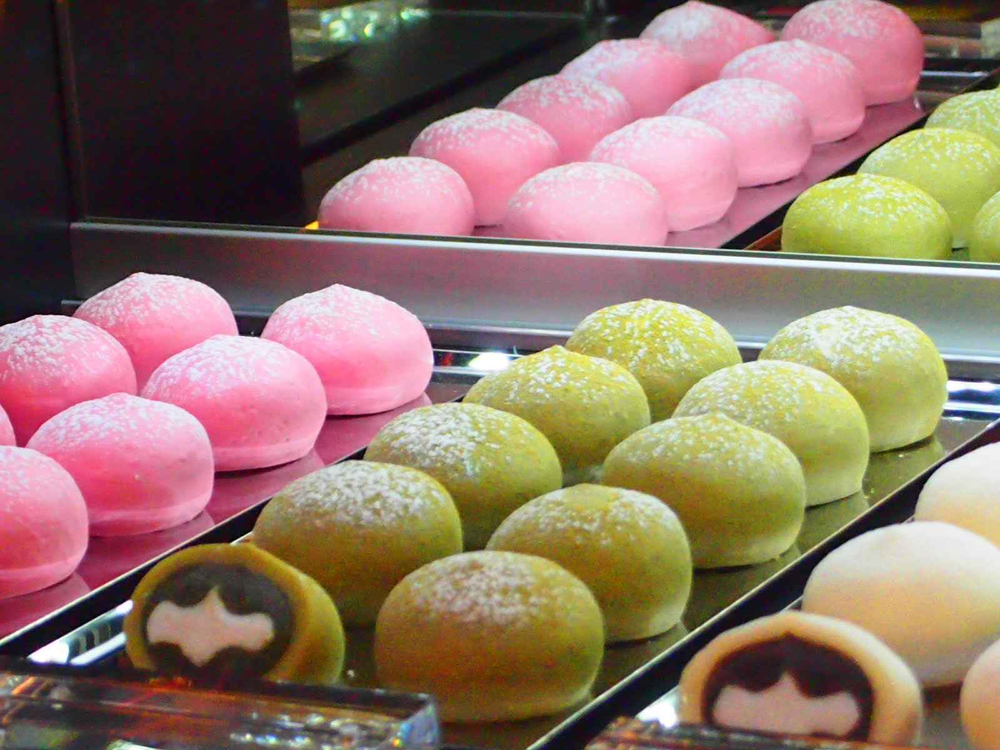

Food in Japan
Japanese cuisine represents a balance between tradition, seasonality, and aesthetic harmony, offering a cultural experience beyond taste.

Food in Japan is deeply connected to cultural values, nature, and daily life. Meals are carefully prepared with attention to balance, freshness, and presentation, reflecting centuries of culinary tradition.
From simple home-cooked dishes to refined ceremonial meals, Japanese cuisine emphasizes respect for ingredients, seasonal awareness, and mindful dining practices.



Traditional Japanese Cuisine
Traditional Japanese cuisine is based on rice, fish, vegetables, and fermented foods. Meals emphasize simplicity, natural flavors, and visual harmony, making dining a sensory and cultural experience.

Modern Food Culture
Alongside tradition, Japan has developed a vibrant modern food scene. From street food and ramen shops to contemporary fusion cuisine, Japanese dining reflects innovation while preserving cultural roots.
Food Experience Highlights
Seasonality
Ingredients reflect natural seasonal cycles.
Presentation
Visual balance is essential to every dish.
Regional Diversity
Each region offers unique culinary traditions.
Dining Etiquette
Respect and mindfulness guide dining culture.
Visual Taste of Japan
